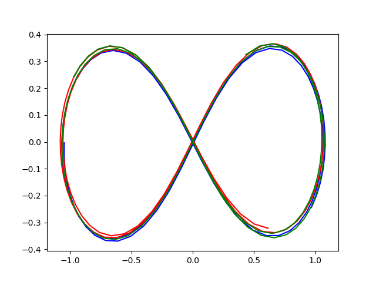

Three body problem
Raw code
The raw code for this example without explanations can be found here.
The three body problem, or more generally the \(n\)-body problem, is a classical problem in celestial mechanics. The statement of the problem is to find the trajectories of three or more massive bodies under the gravitational influence of each other.
System of equations
The magnitude of the gravitational force acting between two objects of masses \(m_1\) and \(m_2\) is given by \(F = \frac{Gm_1m_2}{r^2}\), where \(G = \pu{6.67 \times 10^{-11} N m^2/kg}\) and \(r\) is the distance between their centres.
For the dynamics of two or more bodies, each body experiences a gravitational force from every other body in the direction of that body with the above magnitude. Therefore for \(n\) bodies, the system of differential equations is derived by applying Newton's second law:
Setup in psymple
To model the \(n\)-body problem in psymple, for simplicity assume the motion is happening in a plane, so that \(\mathbf{r}_i = (x_i, y_i)\). Then each differential equation above corresponds to a pair of second-order differential equations in \(x_i\) and \(y_i\). To implement this in psymple requires an additional pair of equations for \(v_{x_i}\) and \(v_{y_i}\), the components of the velocity \(\frac{d \mathbf{r}_i}{dt}\).
The following implementation models the force components
for \(i \ne j\). The velocity components of body \(i\) satisfy the differential equations obtained by aggregating the components of \(F_{ij}\) for \(j=1,\dots,i-1,i+1,\dots,n\).
Common objects
The following objects are common calculations for each \(F_{ij}\).
from psymple.build import VariablePortedObject, FunctionalPortedObject
vars = VariablePortedObject(
name="vars",
assignments=[
("v_x", "mu * Del_x"),
("v_y", "mu * Del_y"),
]
)
dist = FunctionalPortedObject(
name="dist",
assignments=[
("Del_x", "x_o - x"),
("Del_y", "y_o - y"),
("d", "sqrt((x_o-x)**2 + (y_o-y)**2)"),
]
)
force = FunctionalPortedObject(
name=f"force",
assignments=[("mu", "G*m/d**3")]
)
Velocity model
The following class velocity is used to create the model for \(F_{ij}\), with the argument id used to identify each pair \((i,j)\).
from psymple.build import CompositePortedObject
class velocity(CompositePortedObject):
def __init__(self, id):
super().__init__(
name=f"velocity_{id}",
children=[vars, force, dist],
input_ports=["x", "y", "x_o", "y_o", "m_o"],
variable_ports=["v_x", "v_y"],
directed_wires=[
("m_o", "force.m"),
("x", "dist.x"),
("y", "dist.y"),
("x_o", "dist.x_o"),
("y_o", "dist.y_o"),
("dist.Del_x", "vars.Del_x"),
("dist.Del_y", "vars.Del_y"),
("dist.d", "force.d"),
("force.mu", "vars.mu"),
],
variable_wires=[
(["vars.v_x"], "v_x"),
(["vars.v_y"], "v_y")
]
)
Wrapping psymple objects in classes
Using classes to wrap objects in psymple is a powerful way to maximise reusability of objects, create custom behaviour depending on arguments, or implement custom functions and attributes to simplify model building.
Similarly, the following class pos will be used to integrate the velocity variables to calculate the position of each body.
class pos(VariablePortedObject):
def __init__(self, id):
super().__init__(
name=f"pos_{id}",
assignments=[
("x", "v_x"),
("y", "v_y"),
]
)
Defining the system with aggregation
First, specify some helpful identifiers for the orbiting bodies and the interactions between them.
n=3
bodies = [f"{i+1}" for i in range(n)]
ints = [f"{i+1},{j+1}" for i in range(n) for j in range(n) if i != j]
Next, create instances of all the interactions and position integrators that will make up the system components.
Finally, define the composite system. This object exposes as inputs the masses of each body, connects these masses to the relevant force components, and connects the velocity variables to the position integrators. Finally, it aggregates the velocity components together and exposes all velocity and position variables.
coords = ["x", "y"]
n_body_model = CompositePortedObject(
name="system",
children = forces + positions,
variable_ports=[
port
for i in bodies
for port in [f"x_{i}", f"y_{i}", f"v_x_{i}", f"v_y_{i}"]
],
input_ports=[f"m_{i}" for i in bodies],
directed_wires=[
(f"m_{i}", [f"velocity_{j},{i}.m_o" for j in bodies if j != i])
for i in bodies
]
+ [
(
f"pos_{i}.{coord}",
[f"velocity_{i},{j}.{coord}" for j in bodies if j != i]
+ [f"velocity_{j},{i}.{coord}_o" for j in bodies if j != i]
)
for i in bodies for coord in coords
]
+ [
(f"velocity_{i},{int(i)%n + 1}.v_{coord}", f"pos_{i}.v_{coord}") # (1)!
for i in bodies for coord in coords
],
variable_wires=[
(
[f"velocity_{i},{j}.v_{coord}" for j in bodies if j != i],
f"v_{coord}_{i}"
)
for i in bodies for coord in coords
]
+ [
([f"pos_{i}.{coord}"], f"{coord}_{i}")
for i in bodies for coord in coords
],
)
- The choice
int(i)%n + 1ensures only one of the interaction components connects to a position integrator for each \(i\).
Simulation and plots
To run a simulation, a System instance is created for n_body_model which also specifies the system parameter G, the gravitational constant. In this example, matters are scaled so that \(G = 1\).
A choice of initial conditions
There are many initial conditions and values of masses for each body which create interesting behaviour for a three body problem. Here is just one set.
initial_values={
"x_1": 0.9700436,
"y_1": -0.24308753,
"x_2": 0,
"y_2": 0,
"x_3": -0.9700436,
"y_3": 0.24308753,
"v_x_1": 0.466203685,
"v_y_1": 0.43236573,
"v_x_2": -2*0.466203685,
"v_y_2": -2*0.43236573,
"v_x_3": 0.466203685,
"v_y_3": 0.43236573,
}
input_parameters={
"m_1": 1,
"m_2": 1,
"m_3": 1,
}
Here is the simulation run.
sim = S.create_simulation(
initial_values=initial_values,
input_parameters=input_parameters,
)
sim.simulate(t_end=10)
Trajectory plots
Rather than use the command sim.plot_solution() to generate the time series plots, the six position variables can instead be extracted and plotted against each other to generate the trajectory plots for each of the three bodies.
import matplotlib.pyplot as plt
x_1 = sim.variables["x_1"].time_series
y_1 = sim.variables["y_1"].time_series
x_2 = sim.variables["x_2"].time_series
y_2 = sim.variables["y_2"].time_series
x_3 = sim.variables["x_3"].time_series
y_3 = sim.variables["y_3"].time_series
plt.plot(x_1, y_1, color="blue")
plt.plot(x_2, y_2, color="red")
plt.plot(x_3, y_3, color="green")
plt.show()
